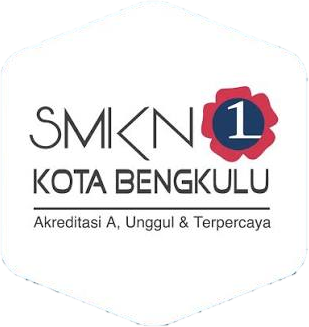
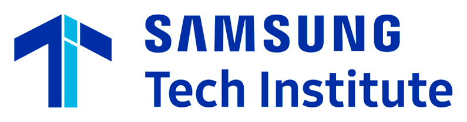
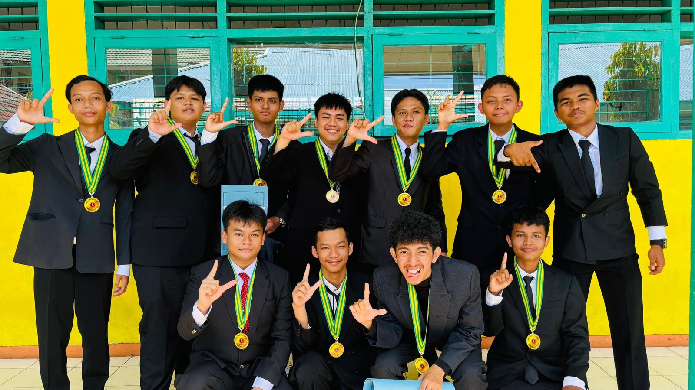
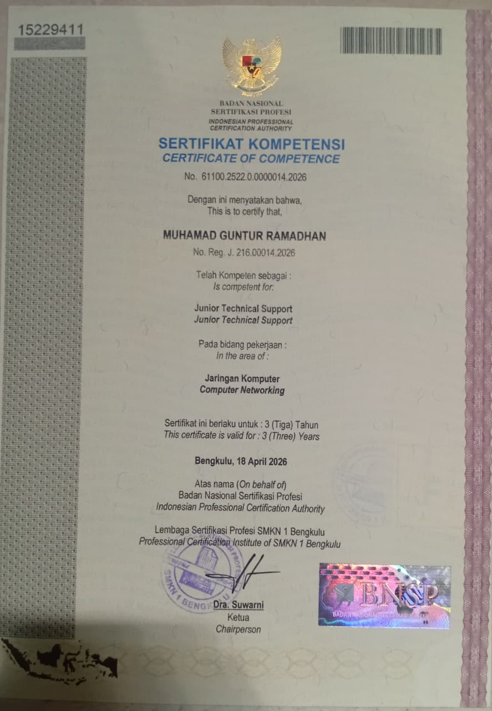

Hai, Saya Muhamad Guntur Ramadhan
Saya seorang Mahasiswa Sistem Informasi
Saya ingin fokus pada pengembangan sistem perangkat lunak, perancangan basis data, analisis sistem informasi, dan teknologi jaringan modern.
Sekilas Tentang Perjalanan Saya
Muhamad Guntur Ramadhan
Mahasiswa Sistem Informasi
Dengan fondasi pendidikan kejuruan di bidang Teknik Jaringan Komputer dan Telekomunikasi (TJKT) dari SMKN 1 Kota Bengkulu. Hai, saya Guntur, lulusan SMK pada tahun 2026. Saya ingin menggabungkan keahlian infrastruktur jaringan, perancangan web responsif, web pemrograman, dan analisis sistem informasi untuk merancang solusi digital yang berdaya guna.

Teknisi Komputer & Jaringan (PKL)
Menjalani Praktik Kerja Lapangan selama 4 bulan penuh di Waroeng USB NT.COM Bengkulu. Menangani pemeliharaan preventif, pembongkaran dan perakitan laptop, penggantian pasta termal dan layar LCD, instalasi ulang sistem operasi, serta pengaturan jaringan kabel UTP.
Ruang Lingkup Praktik
- Troubleshooting perangkat keras laptop dan komputer desktop.
- Pemasangan dan konfigurasi jaringan LAN serta Wi-Fi client.
- Instalasi dan optimasi sistem operasi Windows & software penunjang.
- Pelayanan teknis dan konsultasi perangkat kepada pelanggan.
Pendidikan & Pengalaman
Riwayat Pendidikan
S1 Sistem Informasi
Universitas Muhammadiyah Bengkulu (UMB)
Mempelajari dasar-dasar pemrograman web, perancangan basis data, logika algoritma, dan arsitektur sistem informasi modern.
Teknik Jaringan Komputer & Telekomunikasi (TJKT)
SMKN 1 KOTA BENGKULU
Menyelesaikan pendidikan menengah kejuruan dengan fokus pada instalasi jaringan komputer, konfigurasi router/switch, perakitan PC, dan administrasi server.

Sekolah Menengah Pertama
SMPN 13 KOTA BENGKULU
Menempuh pendidikan dasar menengah pertama dan mulai mengeksplorasi minat dalam dunia komputer dan teknologi informasi.
Sekolah Dasar
SDN 47 KOTA BENGKULU
Pendidikan dasar 6 tahun.
Riwayat PKL Dan UKK
Teknisi Komputer & Jaringan
Waroeng USB NT.COM Bengkulu
Melaksanakan Praktik Kerja Lapangan dengan fokus tugas:
- Perakitan, pembongkaran, dan pembersihan komponen laptop serta komputer desktop.
- Troubleshooting hardware rusak, penggantian keyboard, baterai, dan harddisk/SSD.
- Instalasi sistem operasi Windows, driver perangkat, dan aplikasi pendukung kerja.
- Pengkabelan dan crimping kabel jaringan UTP untuk koneksi jaringan toko.
Peserta UKK Samsung Tech Institute
SMKN 1 Kota Bengkulu
Menyelesaikan Uji Kompetensi Keahlian standar industri dengan hasil memuaskan pada kompetensi perakitan dan konfigurasi jaringan.

Dokumentasi & Sertifikat
Uji Kompetensi Keahlian
Samsung Tech Institute & SMKN 1 Bengkulu
Praktik Kerja Lapangan
Waroeng USB NT.COM

Pelepasan Siswa Angkatan 2026
SMKN 1 Kota Bengkulu

Sertifikat Kompetensi BNSP
LSP SMKN 1 Kota Bengkulu
Mari Berkolaborasi Bersama
Mari Terhubung!
Apakah Anda memiliki pertanyaan mengenai tugas kuliah, ide proyek teknologi informasi, atau ingin berdiskusi dan bertukar wawasan? Jangan ragu untuk menghubungi saya melalui kontak di bawah ini.